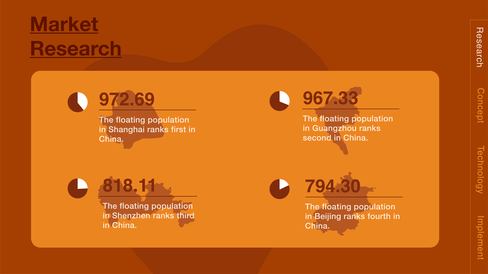

taste of memories
Interaction Design, Service & App,
2019

×

This is a restaurant service project for customized dishes, designed to meet strangers’ needs for “taste in memories”. First, the user places an order through the Wechat Official Account, go to the restaurant to have a one-to-one conversation with the chef about the taste of dishes they ordered, and finally eat the dishes with taste in memories. To encourage users to participate actively, we convert the “taste” of dishes into abstract visual images and put them in the menu as a dish with high-tech means. When users order this dish, they will get coupons for mobile phone ordering, thus gaining returned customers.
